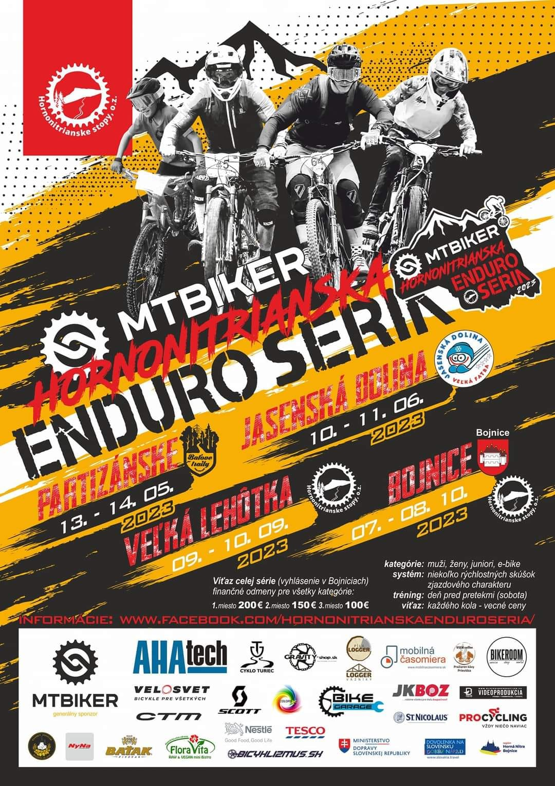
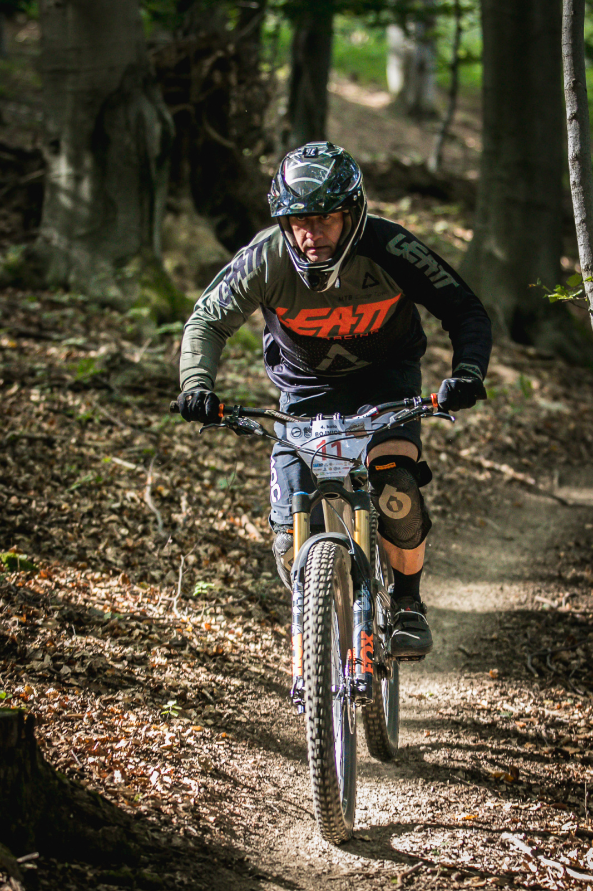
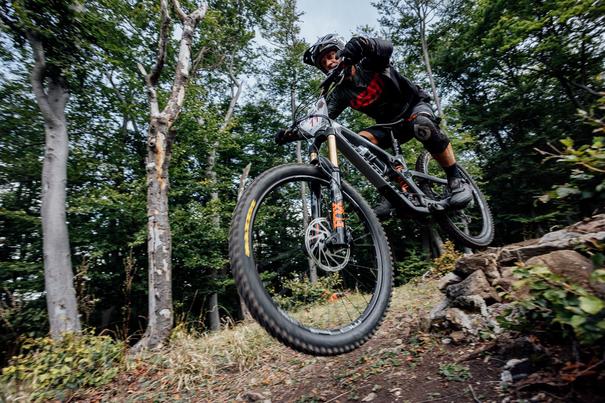
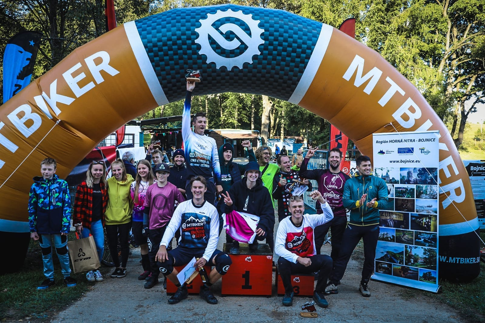

Zase ďalší príjemný víkend na krásnych trailoch nad Bojnicami. Počasie bolo v sobotu úplne ideálne na jazdenie, v nedeľu sa už citeľne ochladilo s ranným mrholením, ale jazdenie to nijak neovplyvnilo.
Prvá aj druhá RS začínali z toho istého miesta po najdlhšom výšlape na trati (cca 3,5km). Prvá RS je veľmi krátka a technicky náročná. Záčína prejazdom cez rock garden, potom krátky úsek lesom po skalách a koreňoch a záver je tvorený strmým zjazdom s ostrými zákrutami a preskokmi cez terénne prekážky.
Bohužiaľ už nájazd do rock garden som pokazil, keď som sa kôli rýchlosti nezmestil do správnej stopy a spadol zacvaknutý v SPD-čkach (zjavne treba nájazdy natrénovať v závodnom tempe a nie len pozvoľne 🙃). Síce som sa rýchlo postavil a pokračoval, pedále som však nestihol zacvaknúť a v technickej časti rock garden som bol späť na zemi už aj so zničenou ľavou tretrou (zničený systém boa upínania). Po chvíli trápenia sa s tretrou som to vzdal, naskočil na bike a došiel prvú RS s uvoľnenou topánkou a najväčšou stratou.
Pred druhou RS sa mi podarilo topánku mierne spevniť a tak som druhú RS mohol ísť v rýchlejšom tempe, ale na plný výkon som sa ísť neodvážil. Trať sa začína pohodovým step-up-om, nasleduje bike parková časť s klopkami a niekoľkými gapmi a záver je dole rúbaniskom cez terénne prekážky a niekoľko ostrých vratiek. Úspešne som sa vyhol problematickému miestu z tréningu, kde som sa po drope cez kameň nezmestil do zákruty a vyobjímal strom, a s jedným pádom v pre mňa obľúbených vratkách (vybrzdená záktruta a pád na bok v zacvaknutých SPD-čkach 😏) som došiel do cieľa bez väčších problémov so stratou 33 sekúnd za vedúcim pretekárom.
Po skončení druhej RS sa mi podarilo na občerstvovačke utiahnuť rozbitú topánku sťahovacími páskami a tešil som sa, že môžem pokračovať pretekovom tempe ďalej.
Na štart tretej RS som sa postavil síce s rešpektom, ale aj odhodlaním dosiahnuť čo najlepší čas. Od štartéra sme sa dozvedeli, že sa na tratiach už riešia dve väčšie zranenia s potrebou odviezť pretekárov sanitkou do nemocnice, ale to neovplyvnilo moje odhodlanie. Sústredil som sa hlavne na záver RS, kde ma v tréningu prekvapil drop zo skaly skrytý za terénnu vlnu a následný cca 7 metrový gap. Oboje som zvládol výborne, ale výsledok nebol taký ako som očakával. Napriek veľmi dobrému pocitu je strata aj umiestnenie porovnateľné s tým z druhej RS, ktorú som išiel s uvoľnenou topánkou 😒.
Štvrtá RS začínala prejazdom cez niekoľko terénnych schodov tvorených kameňmi a následným
drop-om z cca 4 metrov. V tréningu som ho otestoval po dlhom odhodlávaní sa a v závode som
ho tak isto zvládol síce s rešpektom ale bezpečne. Ďalej nasledoval nekonečný pojazd lesom
s občasnými technickými pasážami. Bolo treba dosť veľa šliapať do pedálov, čo je vidieť na
výslednom čase a strate 1:41.6.
Fotky z preteku





